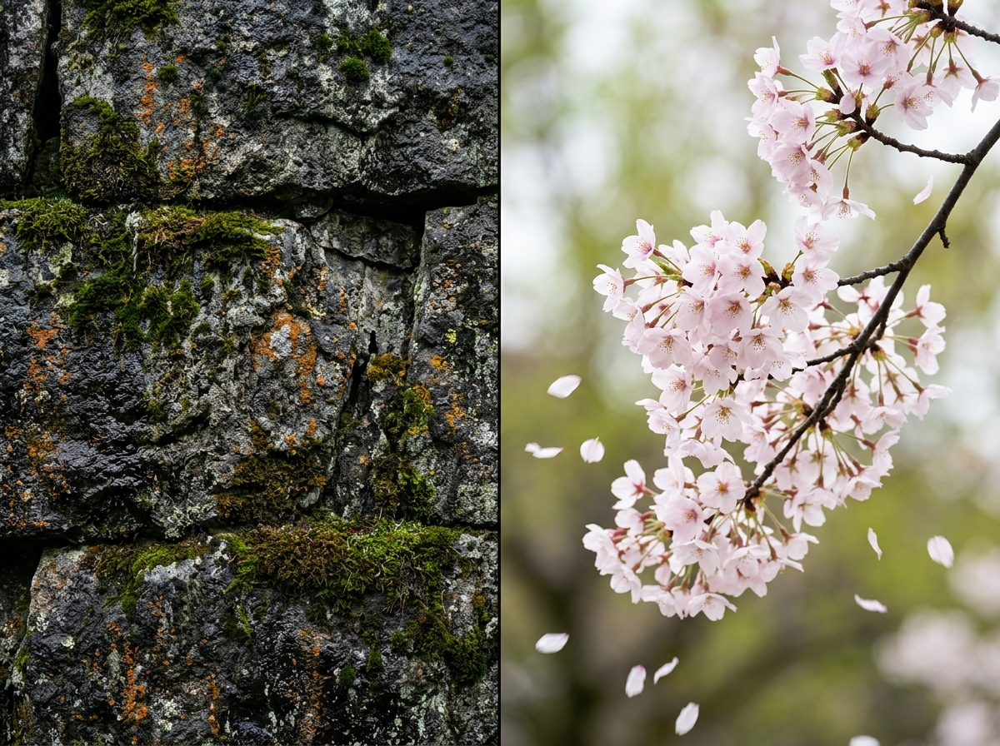
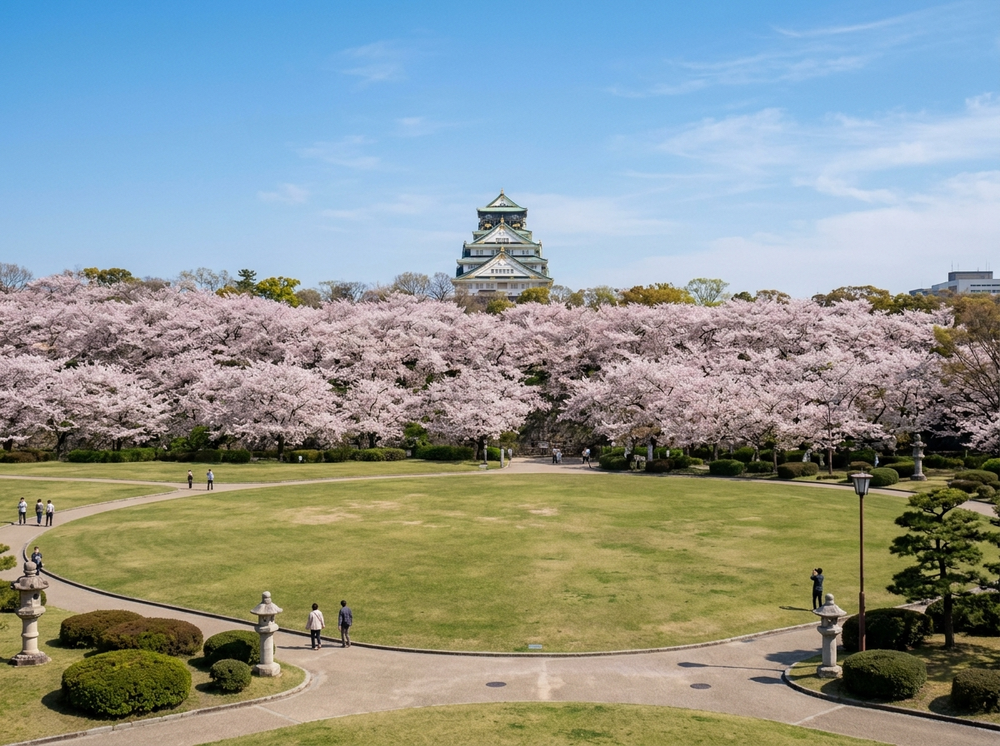
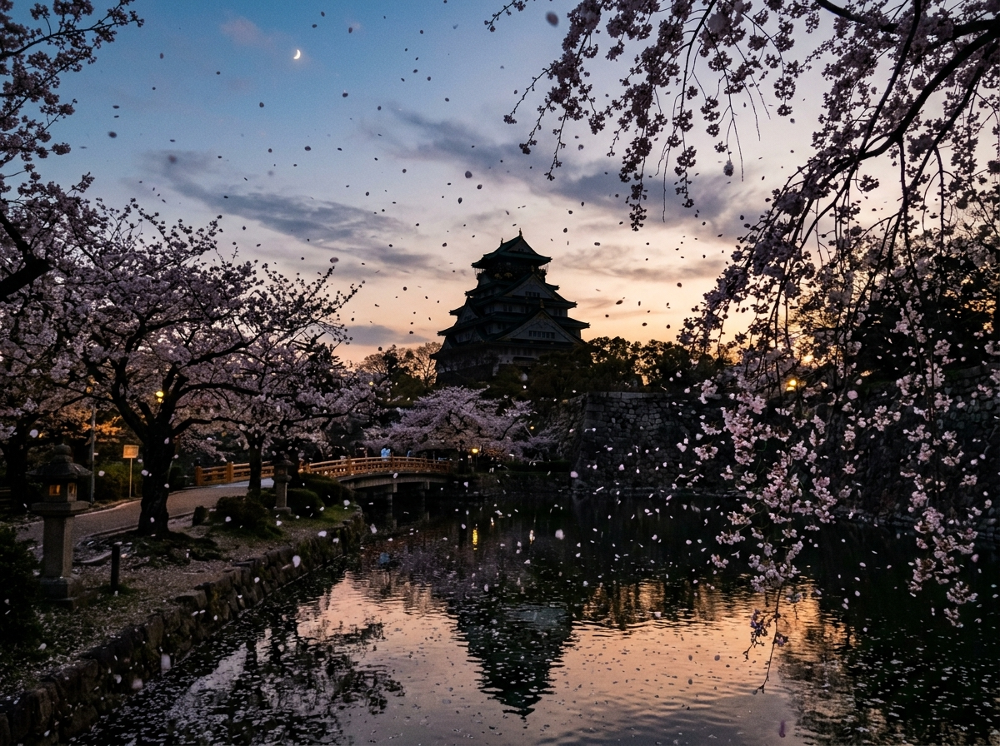

What happens when something eternal meets something that disappears in days?
Late March to early April
The petals have just begun to fall.
There’s a kind of beauty that only appears
when two completely different things share the same place —
without ever trying to become alike.

The weight of stone, the lightness of petals.
A Quiet Contrast
Osaka Castle doesn’t soften for spring.
It never tries to.
The stone walls rise exactly as they always have —
quiet, heavy, and unmoved.
And yet, every March,
cherry blossoms bloom gently at its feet.
No one arranged this contrast.
That’s why it feels so natural.

Two different ideas of time, sharing one moment.
Two Different Kinds of Time
The stone came first.
Massive blocks carried across the sea,
by people who wanted their strength —
and their names — to last.
These walls have stood for more than four hundred years.
And then, there are the blossoms.
They bloom for only a few days.
A week, if the weather is kind.
They never try to stay.
When They Meet
When these two exist in the same frame,
something quiet shifts.
The castle doesn’t become softer.
The blossoms don’t become stronger.
They simply remain what they are.
And maybe that contrast
is what makes the moment feel complete.

Light fades, but the feeling deepens.
After the Light Fades
Daytime is beautiful.
But night feels different.
When the blossoms are lit from below,
everything becomes quieter.
The petals no longer feel like flowers.
They feel suspended —
between falling and staying.
The Stones That Remember
There’s something easy to miss.
On many stones,
small carved marks remain.
They are signatures.
Left by people who carried these stones.
Proof that they were here.
If you touch one,
you are touching something
someone hoped would outlast them.
Two Kinds of Permanence
The castle has been rebuilt many times.
The blossoms return every year.
Neither is truly the original.
But those marks in the stone…
They have never changed.
And somehow,
that is what stays with me.
If you ever stand before Osaka Castle in spring,
look closely.
Not just at the blossoms,
but at the stones beneath them.
You might feel it too —
that quiet meeting of time.
→ Read the next story